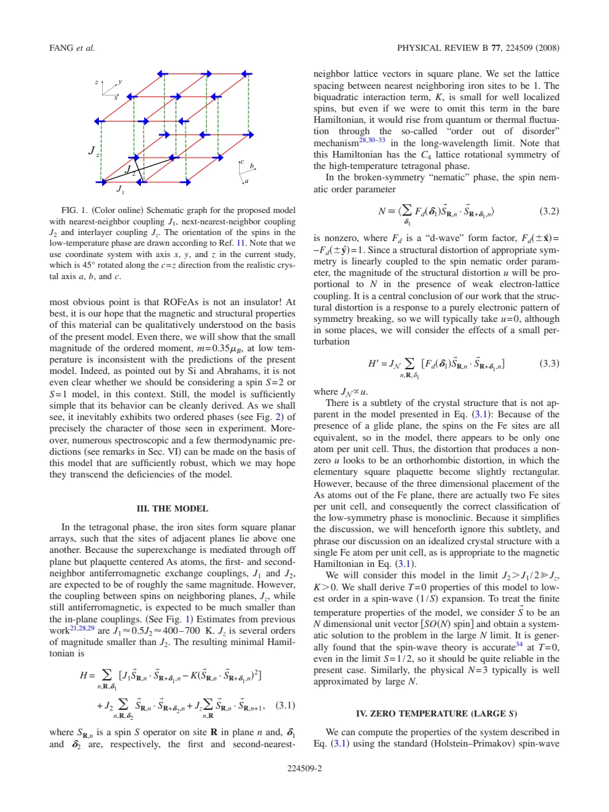
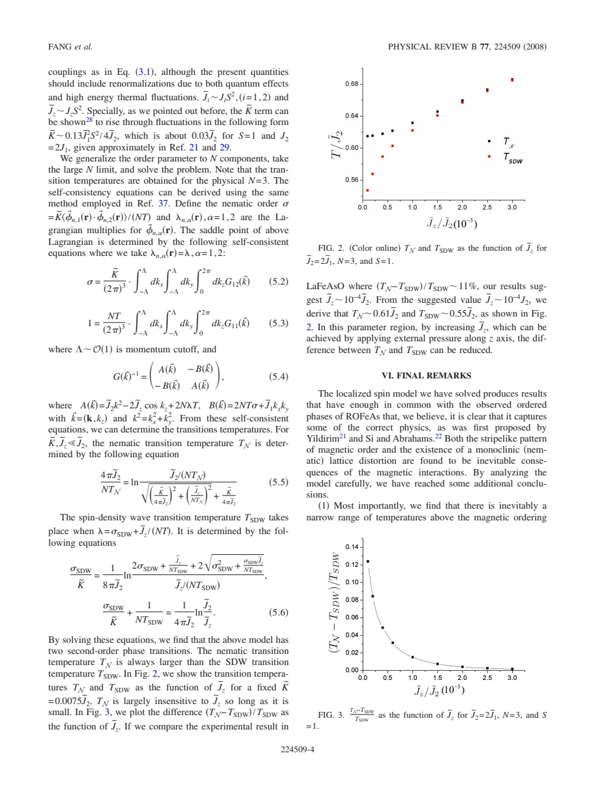

theory · Fang · supplied source 2008
Theory of electron nematic order in LaFeAsO
A frustrated localized-spin model produces directional bond order above magnetic order, illustrating a nematic phase while exposing limits of the strong-coupling description.
The question: Can the structural and magnetic transitions in LaFeAsO follow from the same magnetic interactions?
Before you start: the few terms you need
- Nematic order: rotational symmetry is broken without requiring static magnetic order
- J1-J2 frustration: competing nearest and diagonal spin couplings
- Order from disorder: fluctuations select among classically degenerate configurations
- Large-S / large-N: controlled limits used to approximate spin models
See → explain → test
Understand it in four pictures.
Picture 1 / 4
Compare directional bonds
Look for: A square Fe lattice supports two symmetry-related stripe directions when J2 > J1/2.
Swipe across the picture to read every label, or enlarge it below.
- x-bond correlations
- y-bond correlations
- Twofold directional choice
Teaching bond-anisotropy schematic; arrows are omitted because nematic order need not be static spin order.
Choosing between x and y breaks the fourfold rotational symmetry.
Picture 2 / 4
Order one symmetry at a time
Look for: The intermediate phase distinguishes directions even while the staggered magnetization is zero.
Swipe across the picture to read every label, or enlarge it below.
- Symmetric high T
- Intermediate nematic
- Low-T stripe magnet
Teaching symmetry sequence, not a measured temperature axis.
A composite bond order parameter can survive above the spin-density-wave transition.
Picture 3 / 4
Let the lattice respond
Look for: A structural distortion with the same symmetry couples linearly to nematic order.
Swipe across the picture to read every label, or enlarge it below.
- Spin correlations
- Nematic bond order
- Coupled lattice distortion
Proposed model mechanism; the paper does not establish it as the only possible origin in the real metal.
In this proposal, lattice anisotropy can be a consequence of electronic symmetry breaking.
Picture 4 / 4
Test the weak point
Look for: The model predicts ordered moments and transition temperatures larger than the observed values.
Swipe across the picture to read every label, or enlarge it below.
- Correct symmetry sequence
- Wrong moment / scale
- Qualitative model limits
The source treats a metal as localized spins and explicitly acknowledges that approximation.
Explaining the sequence of broken symmetries is not the same as reproducing the full electronic structure.
Predict before revealing
Can the model have unequal x/y bond correlations while its average ordered spin is zero?
Choose an answer, then compare the reasoning.
Nematic order is a composite spin-correlation difference. Its symmetry can order before the individual spin pattern does.
Read the answer
Yes: that is its intermediate nematic phase Nematic order is a composite spin-correlation difference. Its symmetry can order before the individual spin pattern does.
Go deeper Follow the full argument
Identify the two different transitions
The 2008 paper seeks one explanation for the nearby structural and magnetic transitions reported in undoped LaFeAsO. It distinguishes the structural/nematic temperature, called TN in this source, from the lower spin-density-wave temperature TSDW. This notation is unusual if one normally uses TN for the Néel temperature, so keep the paper's definition visible. The reported experimental scales are approximately 150 K and 135 K. Their proximity does not mean they break the same symmetry. A directional distortion reduces the lattice's rotational symmetry; static magnetic stripe order additionally fixes a spin pattern. The central theoretical question is whether directional order can appear while the spins still fluctuate. The answer within the model is yes: an intermediate nematic phase occupies a narrow temperature interval.
Why diagonal exchange creates two stripe choices
The Fe sites are modeled as square planes with nearest-neighbor AF coupling J1, diagonal AF coupling J2, weak interplane coupling Jz and a biquadratic interaction K. In the regime J2 > J1/2, diagonal couplings favor two interpenetrating antiferromagnetic sublattices. Their relative orientation is classically insufficiently fixed by J1. Quantum or thermal fluctuations, or an explicit small K, select collinear stripe patterns. Those patterns have wavevector (π,0) or (0,π) in the idealized one-Fe square coordinates. A bond order parameter measures the difference between nearest-neighbor spin correlations along x and y. It does not require a nonzero mean spin at every site. That difference makes the intermediate phase an Ising-like directional choice, rather than a conventional magnet with a smaller ordered moment.
Separate a lattice distortion from its proposed cause
The Hamiltonian starts with fourfold lattice symmetry, and the nematic order breaks it spontaneously. A distortion with matching symmetry couples to that order, so the lattice can respond secondarily. The authors use an idealized one-Fe description in which a square plaquette becomes rectangular. They also discuss the real three-dimensional As arrangement and its two-Fe unit cell, calling the experimental low-symmetry phase monoclinic in the supplied historical account. This crystallographic terminology and coordinate rotation should not be silently replaced with a different convention. The mechanism offers an electronic route to a structural transition, but the theoretical calculation alone cannot prove that the real material is governed by this route rather than additional orbital, itinerant or lattice physics. Coupled observables need independent tests of the proposed primary order.
Read the approximation before reading the phase diagram
At zero temperature the analysis uses a large-S spin-wave expansion. At finite temperature it introduces N-component spin fields and solves a large-N continuum model. The calculated phase sequence contains two second-order transitions with TN above TSDW. Weak interlayer coupling changes the magnetic ordering temperature more strongly than the nematic transition, so increasing Jz narrows the separation. The authors suggest pressure along the stacking direction as a way to test that tendency. The curves are predictions of an approximate model at specified parameters, not a fit that determines an unambiguous exchange constant from the real material. The paper also predicts nearly soft collective modes at additional wavevectors and directional spin-wave velocities, giving neutron spectroscopy more specific targets than the bare observation of structural anisotropy.
Keep the useful result and the failure together
The paper is unusually explicit about its main limitation: LaFeAsO is metallic, so a localized-spin Hamiltonian cannot fully represent its electrons. The observed ordered moment of roughly 0.35 Bohr magneton is much smaller than the model obtains for plausible exchange ratios; frustration alone does not solve that discrepancy. Transition temperatures estimated with representative exchanges are also about twice the observed scales. Thus the robust lesson is a mechanism for separating rotational and magnetic symmetry breaking, not a quantitatively complete theory of the pnictide. Its final discussion extrapolates nematic and magnetic endpoints with doping and speculates about superconducting pairing. Those remarks were exploratory in 2008 and should not be presented as measured phase boundaries or a present-day determination of pairing symmetry.
Translate the mathematics Key equations and symbol meanings
H = J1 ΣNN Si·Sj + J2 ΣNNN Si·Sj + Jz Σinterlayer Si·Sj − K ΣNN (Si·Sj)²
Symbols: Si: spin operator; NN: nearest-neighbor bonds; NNN: diagonal bonds; Jz: weak interplane AF coupling; K: biquadratic coupling.
Minimal localized-spin model. The stripe regime is J2 > J1/2 with Jz and K small; it omits metallic electronic degrees of freedom.
N ∝ ⟨S_R·S_(R+x) − S_R·S_(R+y)⟩; u ∝ N
Symbols: N: directional bond order, up to the source's sum and normalization; u: matching structural distortion.
N can be nonzero even if ⟨S_R⟩ = 0. Weak electron-lattice coupling transfers the same symmetry breaking to the lattice.
TN > TSDW
Symbols: TN: this paper's nematic/structural transition temperature, not its magnetic transition; TSDW: spin-density-wave ordering temperature.
The approximate finite-temperature solution has an intermediate phase with directional correlations but no static magnetic order.
Read the evidence A guided look at the original figures

Open the full original page ↗

Open the full original page ↗
What this paper does—and does not—establish
- Historical 2008 model, not a current pnictide review.
- Localized-spin treatment is qualitative for a metal and fails to reproduce the small measured moment.
- Large-S and large-N calculations and the one-Fe coordinate convention must remain distinct from direct experimental structure.
Explain it back.
Try answering aloud before opening the explanation.
What does TN mean in this paper?
The nematic/structural transition; the lower magnetic transition is TSDW.
What observation does the model fail to explain quantitatively?
The small ordered moment and the absolute transition-temperature scales.
Does the paper establish the superconducting pairing symmetry?
No. Its final pairing remarks are explicitly speculative and historical.
Connect the next paper.
Source version, reading coverage and preservation
Full extracted body and reference notes read; rendered model and finite-temperature equations/figures on pages 2 and 4 checked.
Reviewed body pages: 1, 2, 3, 4, 5. Cited experiments and references not independently re-read.
Original file retained byte for byte. SHA-256: e91227d8d61e62f93f1d6b22634cc25fb7c7c1cd7682d0490f42167582317246
Filename: PRB - Fang - Electron nematic order in LaFeAsO - 2008.pdf.